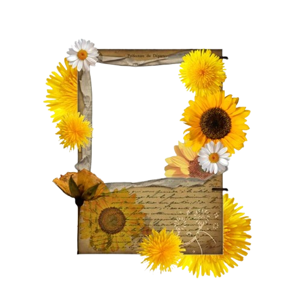
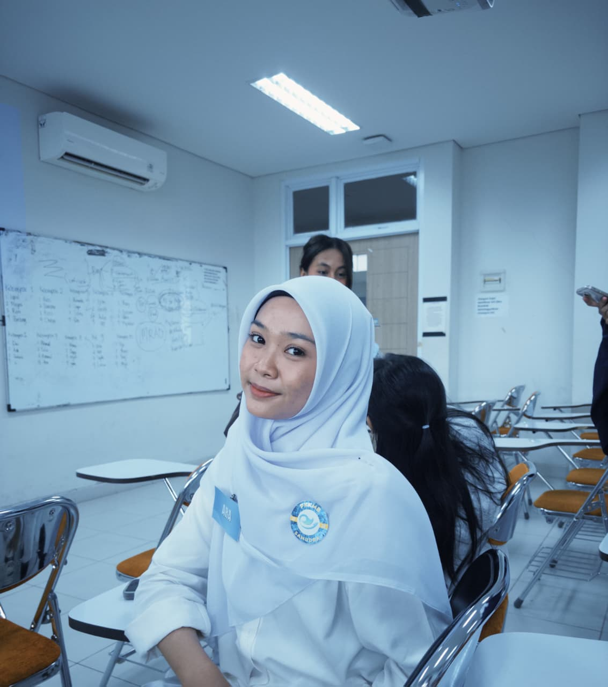

Web Enthusiast | Exploring Technology | Coding with AI & Coffee
I'm currently studying Information Systems at Tanjungpura University. Back in high school I majored in Software Engineering, so tech has always been my thing.


I'm the type of person who loves learning new things, especially anything related to technology. Right now I'm focusing on web development, UI/UX, and information systems. Outside of coding, I enjoy books, music, and anything that gives positive energy.
When I’m not coding or studying, here’s what I usually do to recharge and stay happy:
Team Leader
2025Leader of OSIS
2024 - 2025National Level
2024National
2024National
2025National
2026Personal portfolio website built with HTML, CSS, and JavaScript for IT Club.
View on GitHubInventory recording system for BPKAD Kabupaten Mempawah as part of my internship final project.
View on GitHubSimple website for students to report facility issues, with admin feedback feature. Made for Uji Kompetensi Keahlian.
View on GitHubGot a collab idea, question, or just wanna say hi? Feel free to reach out anytime.